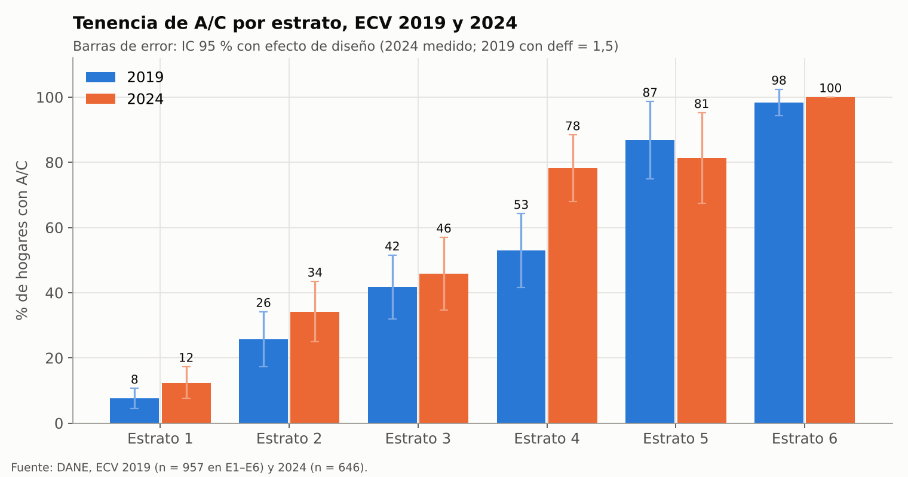
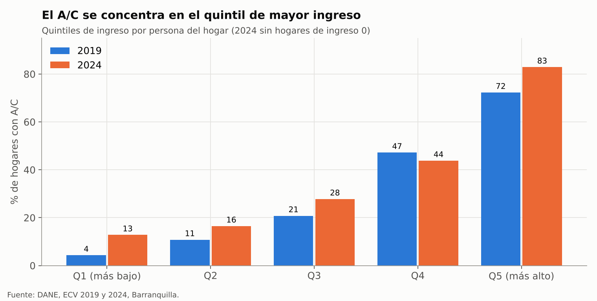
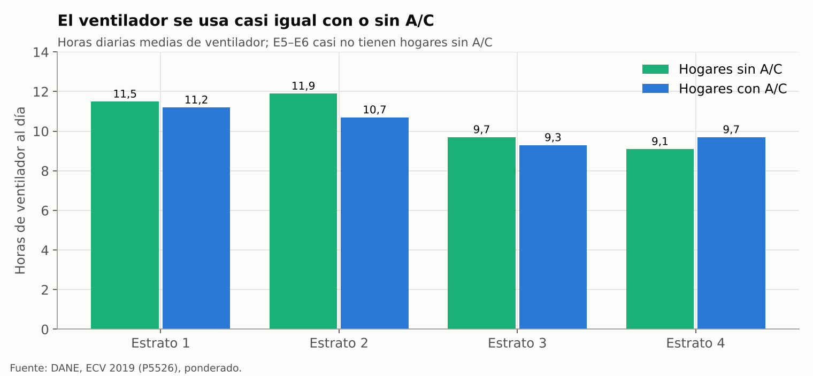
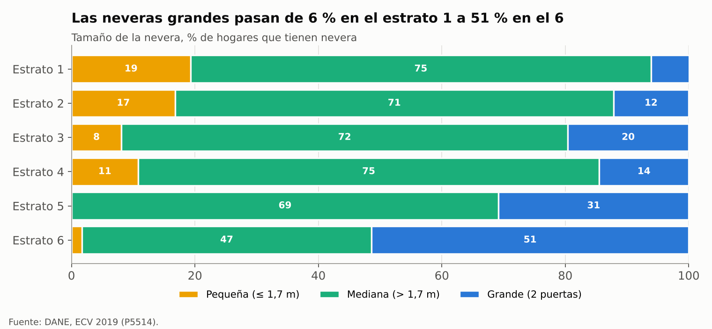
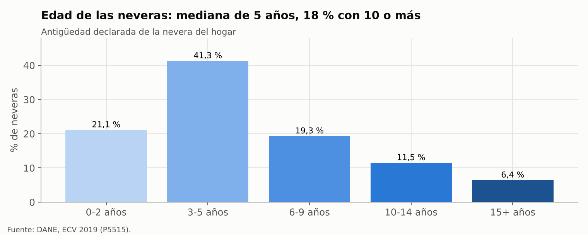
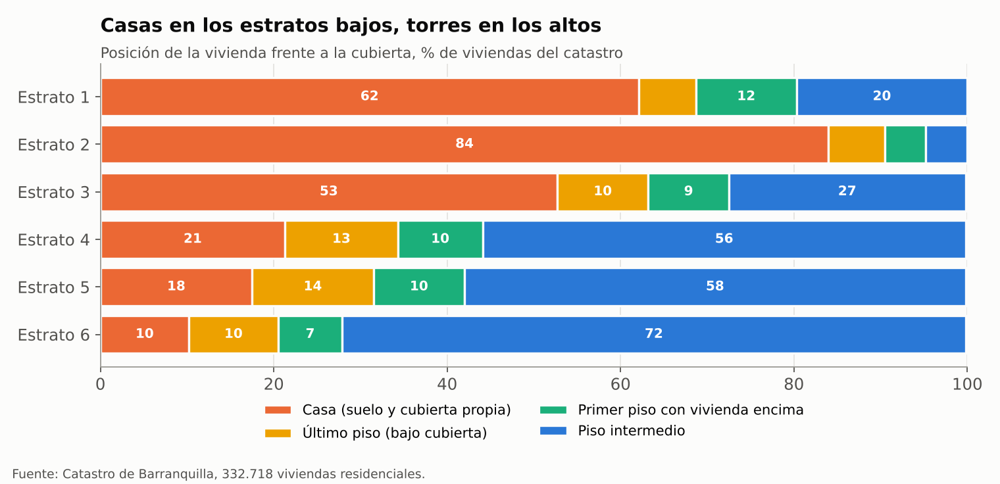
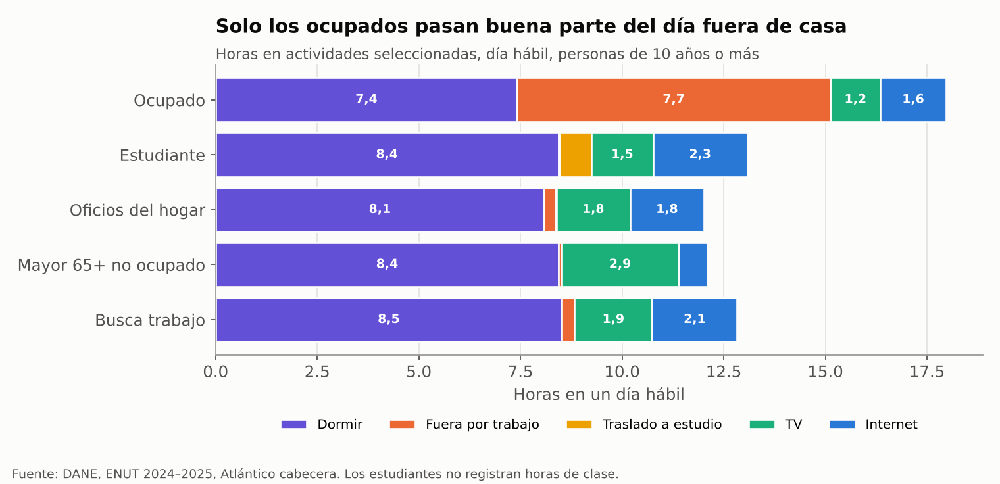
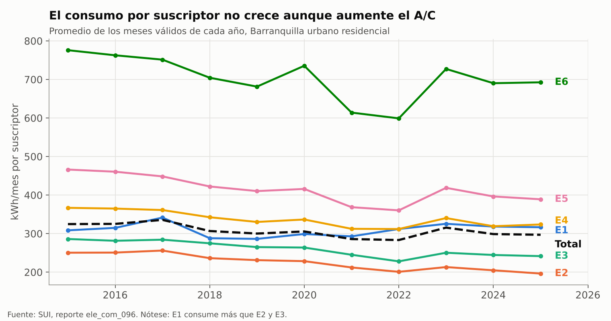
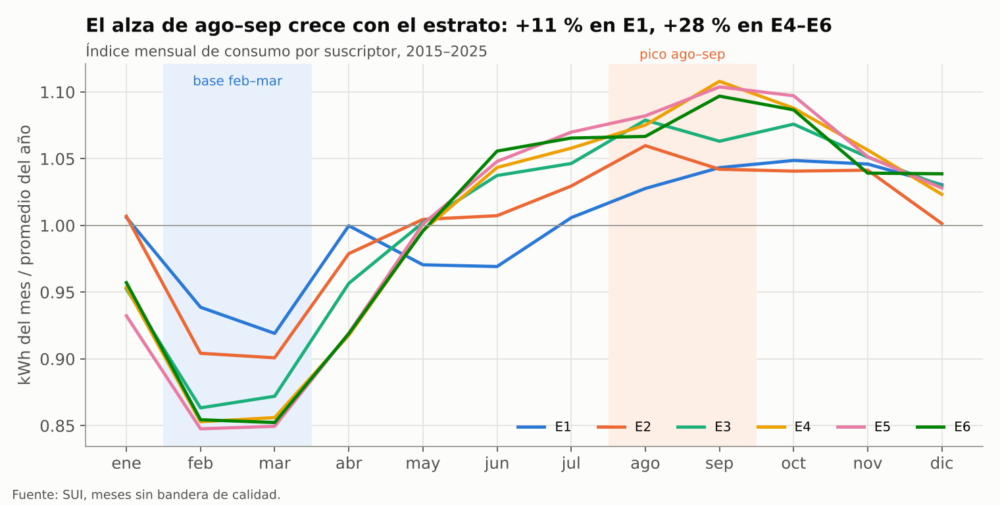

Análisis y conclusiones#
Los datos muestran una ciudad donde casi todos los hogares tienen ventilador y nevera, el aire acondicionado depende sobre todo del estrato y el ingreso, y la vivienda rara vez queda vacía de día. Las cifras usan la ECV 2024 (709 hogares), la variante C de la serie de tenencia y el efecto de diseño de la encuesta.
Hallazgos por tema#
Tema |
Hallazgo principal |
Cifras clave |
Fuente |
|---|---|---|---|
Tenencia de A/C |
Crece con el estrato y con los años; el aumento viene de más A/C dentro de cada estrato, no de cambios en la composición de la ciudad |
13 % (E1) a 98 % (E6) en 2024; ciudad 33,3 % (2019) → 41,4 % ± 4,1 (2024) → 44,9 % (2025); de los 11,6 puntos de 2019 a 2025, 10,4 vienen de las tasas por estrato |
ECV 2018–2025, SUI |
Quién tiene A/C |
El ingreso y el techo pesan aunque se controle el estrato; el tipo de vivienda y el tamaño del hogar no |
Quintil 1 → 5 de ingreso: 13 % → 83 %; razón de momios por cada aumento de 1 en el logaritmo del ingreso 2,1; asbesto 0,37 y zinc 0,15 frente a concreto |
ECV 2024 |
Uso del A/C |
El hogar con A/C lo usa unas 8 h al día en todos los estratos; el equipo típico es mini-split |
Mediana 8 h; 17 % declara 12 h o más; 92,5 % mini-split; 18 % central en E6 |
ECV 2019 |
Ventilador |
Es casi universal y se usa junto con el A/C, no en su lugar |
98,4 % de los hogares; 9,8 h al día con A/C frente a 11,1 sin A/C |
ECV 2019 y 2024 |
Nevera |
Casi universal; tamaño y antigüedad cambian con el estrato |
91,4 % de los hogares; 72 % medianas; grandes 6 % (E1) a 51 % (E6); edad mediana 5 años, 18 % con 10 o más |
ECV 2019 y 2024 |
Vivienda |
Predominan las casas con cubierta propia en E1–E3 y los apartamentos en torres en E4–E6; los techos livianos están en los estratos bajos |
54,5 % casas, 27,4 % pisos intermedios, 8,9 % últimos pisos; 29,5 % de E1 en edificios de 4+ pisos; 60 % de los hogares de E1–E2 bajo asbesto-cemento |
Catastro, ECV 2024 |
Ocupación |
La vivienda casi nunca queda vacía de día, a diferencia de los modelos europeos |
Alguien en casa todo el día hábil en 82–86 % de los hogares; un ocupado pasa 7,7 h fuera; trabaja en casa 15,6 % (E1) a 28,5 % (E6) |
ENUT, GEIH |
Consumo real |
El consumo sube en la temporada caliente y más en los estratos con más A/C; con lecturas reales, el consumo por suscriptor bajó de 2015–2019 a 2023–2025 (E1 −15 %, E2 −19 %, E3 −11 %, E4–E6 −3 a −7 %), sobre todo en los estratos bajos cuando subió la tarifa |
Lecturas reales 2024: E1 207 y E6 723 kWh/mes; alza ago.–sep. frente a feb.–mar. de 16 % (E1) a 31 % (E4–E5) |
SUI 2015–2025 (O3, por tipo de lectura) |
Gasto |
La factura de un hogar con A/C es mayor a igual estrato |
2024, mediana sin/con A/C: E1–E2 104.000 / 140.000; E3–E4 215.000 / 324.000; E5–E6 276.000 / 620.000 COP/mes |
ECV 2024 |
Respuesta horaria al calor |
La demanda del mercado de Air-e sube con el calor en todas las horas, también de noche; el nivel es estable, pero la forma hora a hora cambia entre años |
Noche 1,92 %/°C de índice de calor diario (1,79–2,05); la noche aporta 31–34 % de la respuesta diaria; forma nocturna distinta entre años (\(p = 0{,}008\)) |
XM 2021–2025, ERA5-Land |
Envolvente y climatización (CEELA) |
Los edificios nuevos de Barranquilla tienen vidrio simple y cubiertas de baja resistencia; en VIS se climatiza una habitación y en E5–E6 toda la vivienda |
U de muros 1,9–4,1 y de cubiertas 3,6–6,6 W/m²K; consigna 26,5 °C; COP 3,0; refrigeración de 64–107 kWh/m²·año climatizando toda la vivienda |
CEELA 2025 |
Las cifras en gráficas#


Figura 3 Tenencia de A/C por estrato en las dos olas con más detalle.#


Figura 4 El ingreso pesa aun dentro del estrato.#


Figura 5 A/C y ventilador se usan juntos.#


Figura 6 Tamaño de la nevera por estrato.#


Figura 7 Antigüedad de las neveras.#


Figura 8 Tipo de vivienda frente a la cubierta.#


Figura 9 Presencia en casa según el tipo de persona.#


Figura 10 Nivel de consumo por estrato.#


Figura 11 Patrón estacional del consumo.#
Qué implican para el modelo#
La tenencia es el parámetro que más separa los estratos y debe entrar como distribución (Beta de la variante C), no como un valor fijo. Las horas de uso por equipo pueden ser comunes a todos los estratos.
El techo debe asignarse antes que el A/C y la imputación debe conservar su relación: los hogares bajo techo liviano tienen más carga térmica y menos A/C, lo que modera la demanda de los estratos bajos.
El ventilador y la nevera son carga casi constante en todos los estratos. En los estratos 1–2 explican buena parte del alza estacional, que allí no puede atribuirse al A/C.
La presencia en casa de día es alta, así que el perfil horario no tendrá el valle diurno de los modelos europeos; el horario del A/C dependerá más de la temperatura interior que de la ausencia.
La expansión a la ciudad se hace con suscriptores del SUI o viviendas del catastro, nunca con los factores de la ECV, que sobrerrepresentan el estrato 1 (38,6 % frente a 33,3 % en el SUI).
Hay una tensión que la calibración debe resolver: de 2015 a 2025 la tenencia de A/C subió unos 12 puntos, pero el consumo por suscriptor bajó de 325 a 297 kWh/mes. Equipos más eficientes (inversores), cambios de tarifa y la anomalía del estrato 1 son explicaciones posibles.
Limitaciones abiertas#
Ninguna fuente da la hora del día del uso. La demanda de XM responde al calor también de noche, pero su forma horaria cambia entre años, así que la forma del perfil queda como supuesto con rango (capa C) y XM se usa solo como blanco de validación por franjas (Respuesta horaria al calor).
La ECV no registra el número de equipos de A/C. CEELA da la zona climatizada típica (una habitación en VIS, toda la vivienda en E5–E6), pero no una medición en hogares (Línea base de CEELA).
Los estratos 5 y 6 tienen 20 a 72 hogares por ola; sus tasas son inciertas aunque cercanas a 100 %.
El estrato 1 consume en el SUI más que el 2 y el 3 con poco A/C. Con solo lecturas reales, CEELA da 36 % menos para 2021–2024; falta descargar el SUI con ese filtro y la respuesta de Air-e.
El 16,2 % de las viviendas del catastro no tiene coordenadas (sobre todo estratos 1–2) y la ciudad informal no está.
El clima horario se procesó con la copia de ERA5-Land de Open-Meteo; falta repetir el procesamiento con el archivo del Climate Data Store.